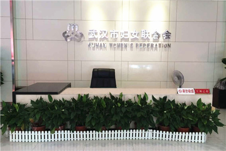
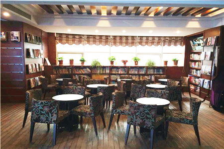

武汉市妇女联合会成立于1949年9月25日，始称“武汉市民主妇女联合会”，1957年改称现名至今。市妇联是中共武汉市委领导下的全市各族各界妇女的群众团体，是市委、市政府联系全市妇女的桥梁和纽带。

武汉市妇女联合会

武汉市妇女联合会书吧
市妇联的基本职能是：代表和维护妇女儿童合法权益，促进男女平等。
市妇联的主要职责是：
- （一）团结、动员全市广大妇女投身改革开放和社会主义现代化建设，推动科学发展，促进社会和谐。
- （二）教育和引导广大妇女发扬自尊、自信、自立、自强的精神，提高综合素质，促进全面发展。宣传马克思主义妇女观和男女平等基本国策，营造有利于妇女全面发展的社会环境。
- （三）代表妇女参与政府和社会事务的民主决策、民主管理、民主监督，参与有关妇女儿童法律、法规、规章和政策的制定，参与社会管理和公共服务，培养、推荐女性人才，推动妇女、儿童发展纲要的实施。
- （四）维护妇女儿童合法权益，向市委、市政府提出有关意见和建议，要求并协助有关部门或单位查处侵害妇女儿童权益的行为，为受侵害的妇女儿童提供帮助。
- （五）关心妇女工作生活，拓宽服务渠道，建设服务阵地，发展公益事业，壮大志愿者队伍，为妇女儿童和家庭服务。加强与社会各界的联系，协调和推动社会各界为妇女儿童办实事。
市妇联机关部室设置：
办公室
82733262
妇女发展部
82787152
社会工作部
82830132
组织联络部
82827464
权益部
82817242
社会工作部
82859115
宣传部
82812945
家庭工作部
82835345
机关党委
82827465
市妇联地址：武汉市江岸区洞庭街127号
市妇联网址：www.whwomen.org.cn
市妇联官方微信：武汉女性（扫描下方二维码关注）